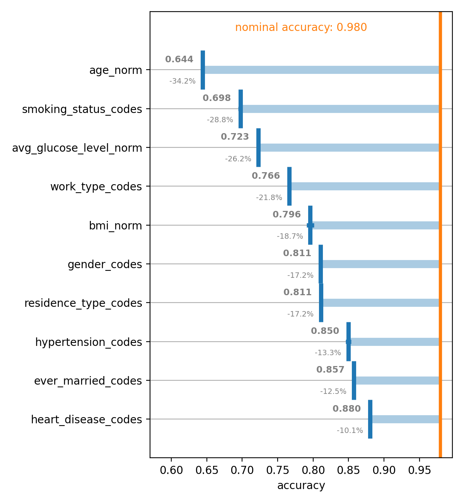
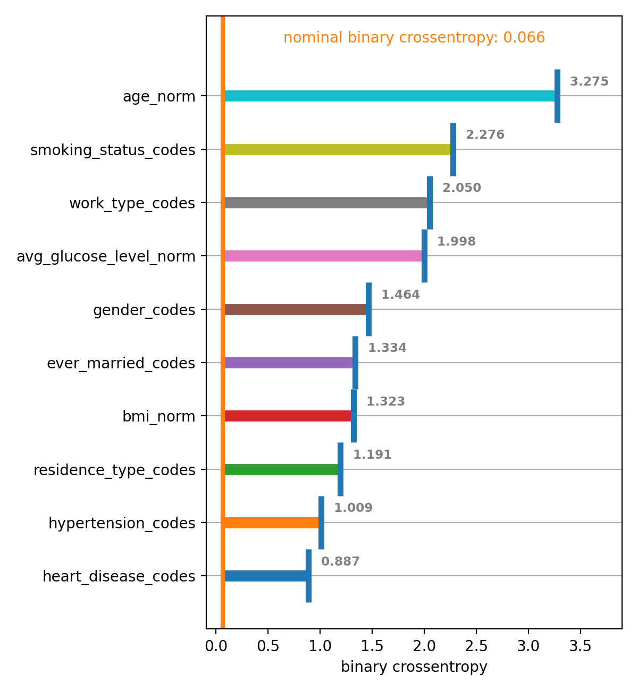

spellbook.inspect¶
Functions for model inspection
Classes:
|
-
class
spellbook.inspect.PermutationImportance(data, features, target, model, metrics, n_repeats=10, feature_clusters=None)[source]¶ Methods:
__init__(data, features, target, model, metrics)Todo
write docstring for spellbook.inspect.permutation_importance
permute_feature(data, features, target, …)Calculate model metrics for dataset with one or more features permuted
plot(metric_name[, xmin, xmax, ascending, …])Plot the feature permutation importance
-
__init__(data, features, target, model, metrics, n_repeats=10, feature_clusters=None)[source]¶ Todo
write docstring for spellbook.inspect.permutation_importance
See also
This implementation follows the Permutation Feature Importance algorithm in scikit-learn
presented in https://scikit-learn.org/stable/modules/permutation_importance.html
implemented in https://scikit-learn.org/stable/modules/generated/sklearn.inspection.permutation_importance.html
- Further reading
Permutation Importance with Multicollinear or Correlated Features: https://scikit-learn.org/stable/auto_examples/inspection/plot_permutation_importance_multicollinear.html
-
permute_feature(data, features, target, model, metrics, permute=None)[source]¶ Calculate model metrics for dataset with one or more features permuted
The feature(s) given by permute are permuted. This may be a single feature or a list of features, in which case all features in the list are permuted in an uncorrelated manner, i.e. simultaneously and independently of each other.
- Parameters
data (
pandas.DataFrame) – The datasetfeatures (
typing.List[str]) – The names of the feature variablestarget (
str) – The name of the target variablemodel (
tf.keras.Model) – The predictor/classifier/regressormetrics ([
tf.keras.metrics.Metric]) – The metrics to evaluatepermute (
typing.Union[str,typing.List[str],None]) – Optional. The name(s) of the variable(s) to permute (independently)
- Return type
- Returns
A dictionary - the keys are the names of the metrics and the values are the values of the metrics
-
plot(metric_name, xmin=None, xmax=None, ascending=True, annotations_alignment='left', show_rel_diffs=True, rainbow=False)[source]¶ Plot the feature permutation importance
This function plots the feature permutation importance calculated with
spellbook.inspect.permutation_importance()Todo
write docstring for spellbook.inspect.plot_permutation_importance
  - Parameters
ascending (
bool) – Optional. Order from the top to the bottom of the plot:True (-) – Ascending from smaller to larger values
False (-) – Descending from larger to smaller values
-
{kind=link}
{kind=link}